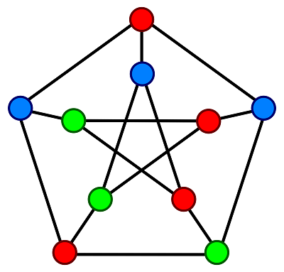

Functional programming

Functional programming is a programming paradigm where programs are constructed by applying and composing functions. It is a declarative programming paradigm in which function definitions are trees of expressions that map values to other values, rather than a sequence of imperative statements which update the running state of the program. In functional programming, functions are treated as first-class citizens, meaning that they can be bound to names, passed as arguments, and returned from other functions, just as any other data type can.
Graph theory
Graph theory is the study of graphs, which are mathematical structures used to model pairwise relations between objects. A graph in this context is made up of vertices which are connected by edges. Graphs are one of the principal objects of study in discrete mathematics. Graphs can be used to model many types of relations and processes in physical, biological, social and information systems. Many practical problems can be represented by graphs.